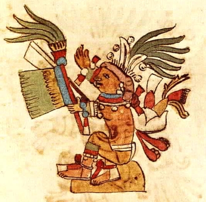

Początek świata
Według tradycji Azteków, ich przodkowie wyłonili się ze świętej ziemi w Chicomoztoc - legendarnej góry "siedmiu jaskiń", miejsca kosmicznej genezy wielu ludów Mezoameryki. Liczne relacje opowiadają jednak o tym, iż Aztekowie zawdzięczają swoją nazwę mitycznej
wyspie Aztlan. Jej nazwa oznacza "miejsce bieli" lub "miejsce czapli".
Według mitu, Azteków prowadził władający mową idol plemiennego boga wojny, Huitzilopochtli. Kiedy dołączyli do nich koczowniczy myśliwi i zarazem
zbieracze zwani Mexica, bóg przekonał swój lud, by przyjął ich nazwę, tryb życia, a także broń, czyli łuki i strzały. Przez 20 lat wędrowali poprzez góry i pustynie, nigdzie nie zatrzymując się na dłużej, nieustannie popychani naprzód
przez Huitzilopochtli, ducha-wizjonera, który prorokował swemu ludowi przyszłą wielkość. Bóg zwracał się do Indian poprzez swych kapłanów, opowiadając im, jak to podbiją wszystkie ludy wszechświata i staną się panami oraz królami świata.
Według bóstwa mieli otrzymywać daninę w postaci złota, szmaragdów, korali, piór quetzala, kakao i bawełny.
Mityczna podróż zawiodła ich do Culhuacán albo też - co trochę mylące - do Chicomoztoc, choć być może to jedno i to samo miejsce.
Później nastąpiła cała seria wewnętrznych kłótni, a jedna z nich spowodowała odejście siostry Huitzilopochtli, Malinalxochitl, która udała się dalej, żeby założyć miasto Malinalco. Indianie Mexica kontynuowali swoją wędrówkę do Coatepetl
w pobliżu Tula. Tutaj nadprzyrodzony Huitzilopochtli został w sposób magiczny poczęty przez Coatlicue. Bóg jeszcze w stanie embrionalnym został ostrzeżony o probie zamachu przez swą zazdrosną siostrę, boginię księżyca Coyolxauhqui, oraz
jej 400 braci-gwiazdy, Huitznahua, na niego samego i matkę. Chcąc uprzedzić zabójstwo, Huitzilopochtli wyskoczył jako całkiem dojrzały człowiek z łona matki, przyjmując postać niezwyciężonego kosmicznego wojownika i za pomocą gorejącego
węża odciął głowę Coyolxauhqui, a ciało jej rozczłonkował. Następnie rozrzucił swych braci-gwiazdy po najdalszych zakątkach nieba. Indianie Mexica opuścili wówczas Coatepetl, ruszając w kierunku Tula, a stamtąd - na Wyżynę Meksykańską.
